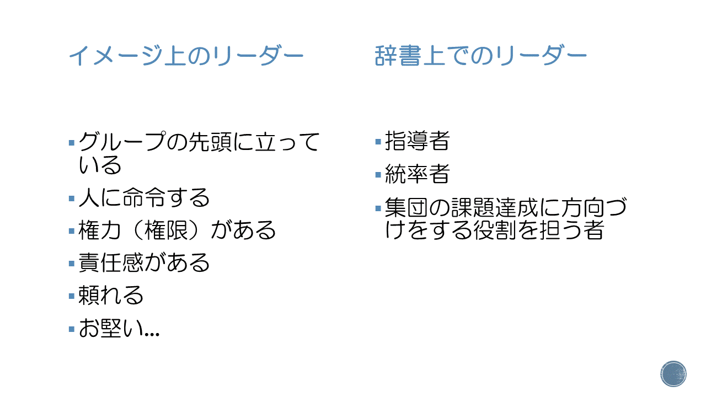

2019/9/15に、福井大学教育学部附属義務教育学校での文化祭でFLIAを代表して「一緒にいたいリーダー」について発表しました。
以下、スライドとスピーチ内容
本題に入る前に、そもそもリーダーって何?
しかし。こういうリーダー、確かに頼りになる。なるかもしれないけれども、「一緒にいたいし、お互いに高めあえる存在になりたい！」とは思わない。
☆一緒にいたいと思えるのはすごくすごいこと。
じゃあ、一緒にいたいと思われるリーダーになるには?
まず、同じ目標をリーダーと持つべきなのではないかと思う。
その中で1人1人がやりたいことをしていけばいい。
その中で皆さん、こう思ったことはあるだろうか。
「私たちはみんな何となく生きている。何かが起こるたび、それに反応するように動いている。もし、何か目標があれば、充実した日々を送れるのに。」
これはもしかすると、多くの学生や企業·組織で働く人たちのつぶやきなのかもしれない。
じゃあ、みんなはいま、なぜ勉強する?なぜ働く?なぜ文化祭をする?
面倒な問いをしたが、これがわからないとさっき言ったようなつまらない日々になってしまう。
「What」「How」はすぐに見つかる。しかし、「Why」は難しい。 人はWhyに動かされる
その「Why」を目標とともにリーダーが一緒に探すのも大切。
さて、その「Why」が見つかったら、行動しよう。
「何もせず、何も言わず、知らん顔をしていれば無事にすごせる。」
というアリストテレスのことばがあるが、どうだろう?これじゃあただのきのこだね。人間なんだから、activeにいこう。
ここで、行動する際に大切なのは、利己を追求するのではなく、他者に尽くすこと。
そうすれば、人生でみんなが抱えるような問題に直面しても、効率的に解決できる。 さらに、奉仕の精神をもつと、短期的で利己的な目標がもっと大きく、長期的で高潔な目標に変わる。
これにつながる話で、みんなの中にはひとりで何でもやってしまう人がいるのではないでしょうか? 強がって、がまんして、いいことってあった?もちろんそれがいいときも"一時的"にはあっただろう。でも長い目で見たら…。 だから、ひとりでもできるというふりをしてはいけない。仲間を頼ろう。本当の強さは自分の弱さを認めること。そんな勇気がある人は、本当にかっこいいと思う。
そして、行動のしかたが見えてきたところでもう1つ。
ただ命令するだけでは、「労働者」のトップにすぎない。
チームを信頼して仕事を任せてはじめて「リーダー」になれる。
長々と一緒にいたいリーダーについて話したが、人によっては様々だろう。
最後に、私が愛してやまないオードリー・ヘップバーンの言葉と、アフリカのことわざでしめようと思う。
「人の評価は、他の人がその人をどう言っているかよりも、その人が他の人をどのように言っているかでより分かるものです。」Audrey Hepburn
「早く着きたいなら、ひとりで行け。遠くまで行きたいのなら、みんなで行け。」アフリカのことわざ